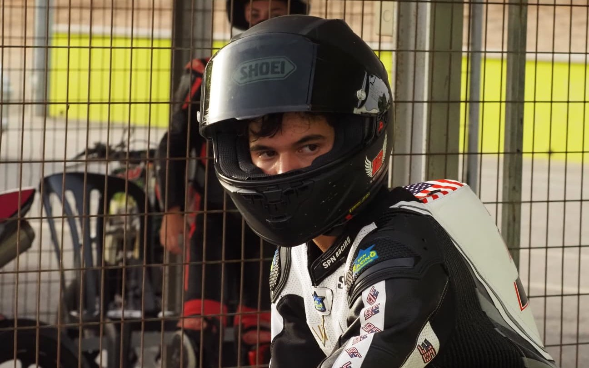
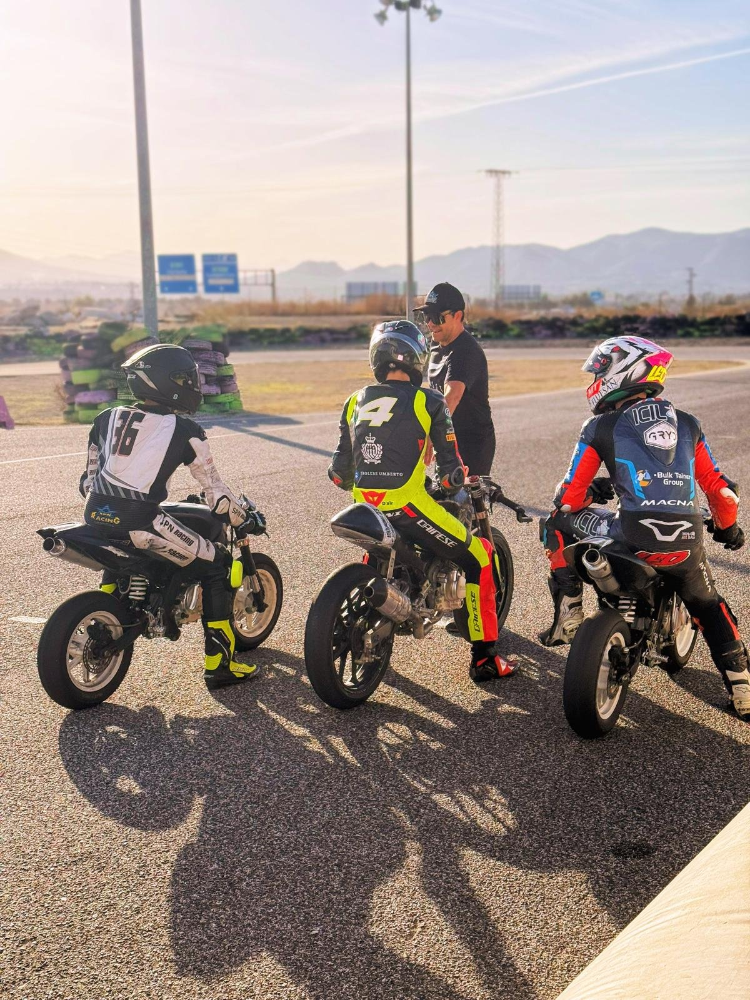
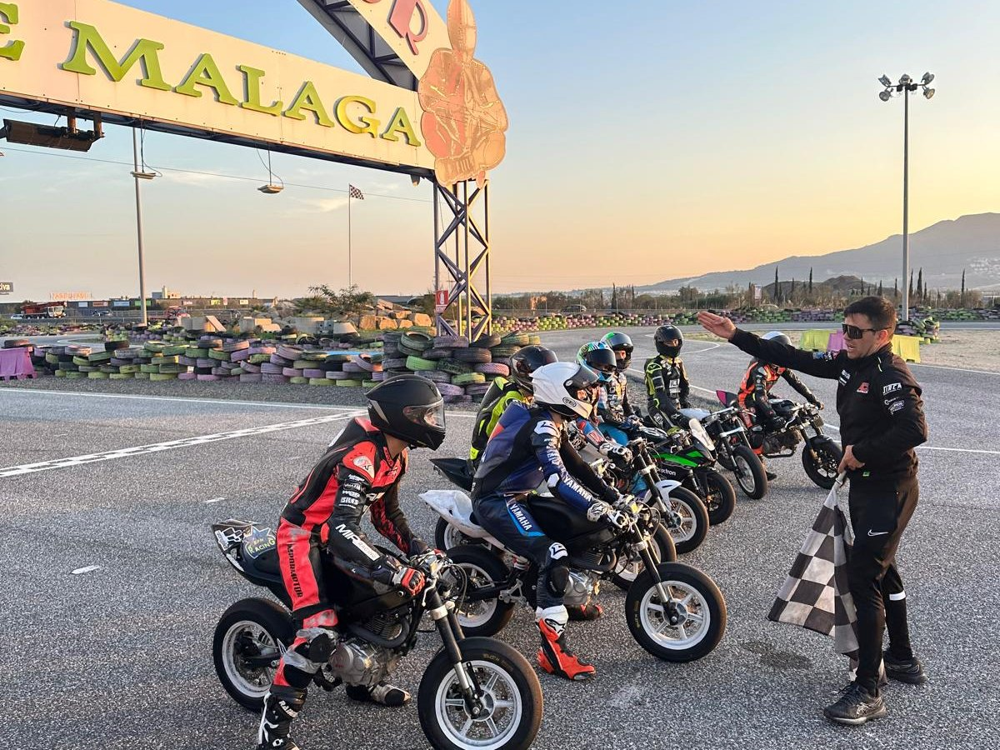
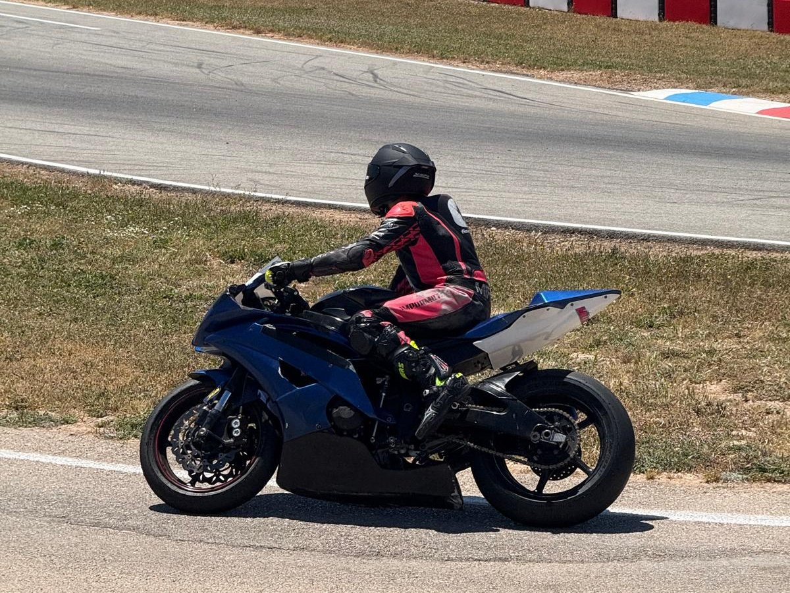

Josh Wood is an American motorcycle racer coming through the European pathway with SPN Academy in Málaga, under coach Nico Ferreira. In 2024 he was invited to race as a wildcard for Team Quaresma, raced MIR Moto5 as a wildcard, and was one of around 120 riders invited to the Red Bull MotoGP Rookies Cup Selection Event. He raced PreMoto3 in 2025. Having finished school in 2026, he trains full time: four days a week in the gym and three on track. His next target is the ESBK Talent Cup.
Bios
Free to use as writtenShort bio
Long bio
Josh Wood is an American motorcycle racer coming through the European system from the inside. With no racing family behind him, he came into the sport through a coaching academy: SPN Academy in Málaga, where coach Nico Ferreira has shaped him since 2024.
That first season he was invited to race as a wildcard for Team Quaresma, raced MIR Moto5 as a wildcard, and was one of around 120 riders invited to the Red Bull MotoGP Rookies Cup Selection Event. He stepped up to PreMoto3 in 2025.
It started with go-karts. He got his first dirt bike in 2022 and was racing in the Spanish national cups a year later. Having finished school in 2026, he now trains full time: four days a week in the gym, three on track.
He is candid about the climb. Asked whether he was ready for the Red Bull event, he says no. And he talks about racing like a student of the sport. His next target is the ESBK Talent Cup.
In his words
Q&A with JoshHow did you first get into motorcycle racing?
I went go-karting as a kid and got a real taste of adrenaline and speed. That's when I knew I loved racing. When I found out about bikes, I just really wanted one. I kept on begging for one until we got one.
What does a normal week look like?
I train four times a week in the gym and three times on track. I train in the mornings, do a lot of cardio, and I take care of my nutrition. I have a lot of protein to build my muscles, because if I don't have a good diet, I just lose my muscle.
What's the hardest part that people watching from the outside probably don't realise?
People just think they can just do it, but if it was so easy, everyone would be doing it. It's not just about leaning the bike or going fast. It takes time and confidence. When you get on the bike, it's about using your body weight, braking at the right moment, head movement. You have to have control over the bike.
What have you learned from Nico at SPN Academy that's changed you most as a rider?
He's taught me the racing line, how to manage a weekend, where to brake, my strength and cardio. But mostly I learned to be consistent, to put the bike in the same spot every time.
Looking back at the Red Bull MotoGP Rookies Cup Selection Event in 2024, what was it like?
It was one of the biggest achievements of my life. It was very humbling, seeing all the level and talent that's there. I took away that I need to improve for the next year, and I'm determined to be better than them.
Quotes
Attributable to Josh Wood“People just think they can just do it, but if it was so easy, everyone would be doing it.”
“It's not just about leaning the bike or going fast. It takes time and confidence. You have to have control over the bike.”
“I learned to be consistent, to put the bike in the same spot every time.”
“It was one of the biggest achievements of my life. I'm determined to be better than them.”
“If it weren't for where I lived, I wouldn't have been able to do half the things we've already done.”
“Morning runs, track training, gym, cardio. A lot of pain. But I take care of my nutrition because if I don't have a good diet, I lose my muscle.”
Story angles
Each with a line from JoshAn American learning the European ladder
Spain is where many of the world's young riders come to develop. Josh is climbing that ladder from the inside, from the national cups through Moto5 and PreMoto3 to the ESBK Talent Cup. The story: how the European pathway works, and what it looks like to an American coming through it.
“If it weren't for where I lived, I wouldn't have been able to do half the things we've already done, or go as often to the track as we have.”
The academy route
Most riders come into racing through family: a father who raced, a family team, connections in the paddock. Josh came in through a coaching academy instead. The story: how academies like SPN are opening the sport to riders without a racing family, and what an academy gives a young rider that a family team can't.
“He's taught me the racing line, how to manage a weekend, where to brake. But mostly I learned to be consistent, to put the bike in the same spot every time.”
Racing the generation coming through
Josh trains and races against riders who are moving into the bigger championships, and sees the level up close. The story: who is coming next, and what separates the riders who move up from the ones who don't.
“It was very humbling, seeing all the level and talent that's there. I'm determined to be better than them.”
What a rider actually learns
Reference points, braking markers, tyre management across a weekend, finding a rider to follow for a reference. The story: the technical side of going faster, explained by someone learning it now.
“If my reference is a 50-metre board, that's where I brake.”
Honest about the climb
Asked whether he was ready for the Red Bull selection event, Josh does not hedge. The story: what progressing through the ranks really takes, from a rider willing to say where he fell short and what he changed.
“No. No. No.” Two years on: “Smarter, more realistic, and wanting to improve.”
Coverage
Heard on, read in- Talk Radio EuropeRadio interview
- RTV Marbella, with Nicole KingTelevision interview
- FTV (Fuengirola Televisión)Television
- Marbella NoticiasTelevision
- Euro Weekly NewsNewspaper, April 2026
- Essential MagazinePrint feature, June 2025
- Planet MarbellaFeature interview, April 2025
- SUR in EnglishProfile, February 2025
- Diario SurNewspaper, February 2025
- Área Costa del SolOnline
“This already puts him among the most promising up-coming young riders.”
Euro Weekly News, April 2026
Photographs
Full resolution on request





Credit as supplied with each file. Photographs may be used for editorial coverage of Josh Wood.